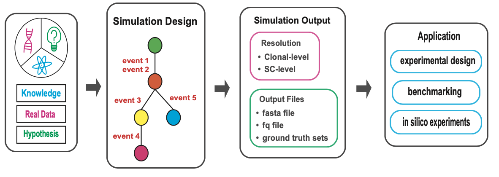
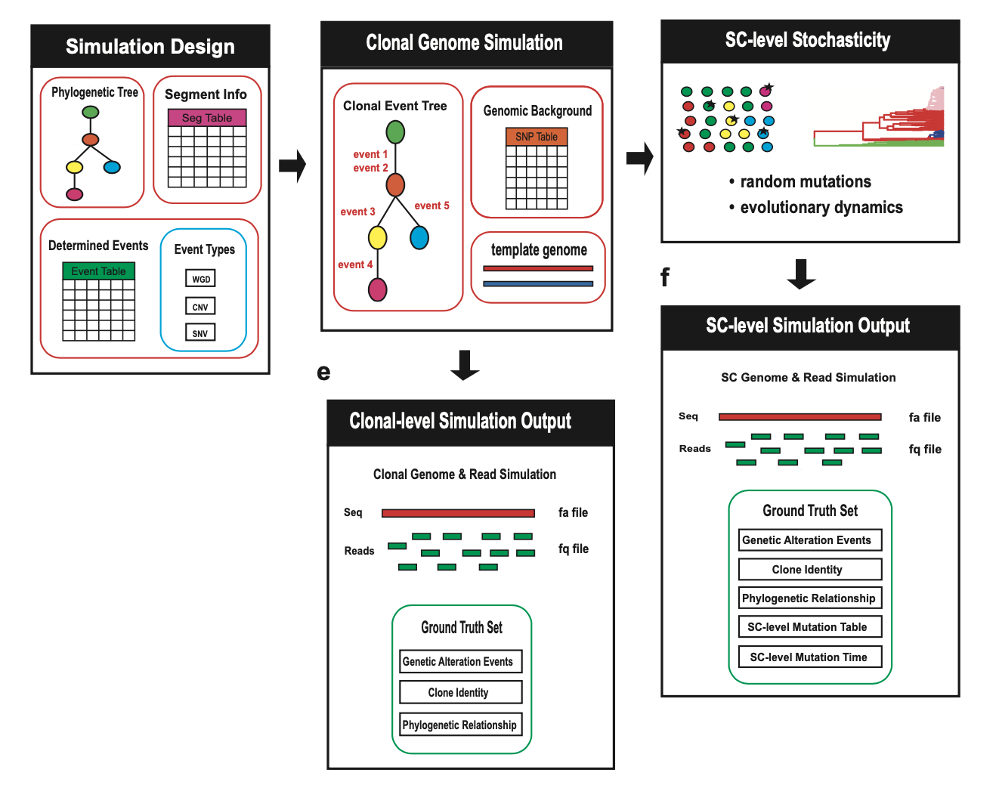

cancerSimCraft is a powerful and flexible R package designed to simulate realistic cancer genomes at both clonal and single-cell resolution. It integrates deterministic rules with stochastic processes to model complex genomic events, including copy number variations (CNVs), single nucleotide variants (SNVs), and whole genome duplications (WGDs). By combining biological knowledge, real cancer genome data, and user-defined hypotheses, cancerSimCraft enables researchers to generate customizable simulations that reflect the intricacies of cancer evolution and heterogeneity.
Major applications of the cancerSimCraft package include: - Benchmarking computational tools for single-cell DNA sequencing (scDNA-seq) analysis. - Exploring clonal evolution and mutation patterns through controlled in silico experiments. - Designing experiments and validating hypotheses in cancer genomics research.
With its modular architecture, cancerSimCraft separates simulation design from execution, enabling efficient parameter exploration and high-throughput simulations. It also provides comprehensive ground truth tracking, documenting every genomic alteration and cellular event at both clonal and single-cell levels.

To install cancerSimCraft, use the following commands in R:
# Install from GitHub
if (!requireNamespace("devtools", quietly = TRUE)) {
install.packages("devtools")
}
devtools::install_github("haijingjin/cancerSimCraft")cancerSimCraft provides 10 detailed vignettes that guide users through the full functionality of the package. These vignettes are designed to help users understand and apply the package’s capabilities, from basic simulations to advanced workflows. Each vignette provides step-by-step instructions, code examples, and explanations to help users learn to use the package’s features. Whether you’re new to cancerSimCraft or an advanced user, these vignettes will guide you through the process of designing, executing, and analyzing cancer genome simulations.
To explore the vignettes interactively, visit the cancerSimCraft website at https://haijingjin.github.io/cancerSimCraft, where all tutorials are organized and easily accessible.
For researchers who prefer to directly access the vignettes and associated data, all materials are available in the /tutorials folder of the main package repository. You can download the repository and navigate to the /tutorials folder to access the vignettes and data files
For detailed documentation of all functions and parameters, refer to the reference page of the cancerSimCraft website at https://haijingjin.github.io/cancerSimCraft. A PDF version of the package manual, named in the format cancerSimCraft_<version>.pdf, is available in the /tutorials folder of the main repository.
If you use this version of cancerSimCraft in your research, please cite our preprint: https://www.biorxiv.org/content/10.1101/2024.12.11.627708v1
Jin H, Navin N, Chen K. cancerSimCraft: A Multi-resolution Cancer Genome Simulator with Comprehensive Ground Truth Tracking [preprint]. bioRxiv 2024.12.11.627708. DOI: 10.1101/2024.12.11.627708.
@article{cancersimcraft2024,
title = {cancerSimCraft: A Multi-resolution Cancer Genome Simulator with Comprehensive Ground Truth Tracking},
author = {Jin, H. and Navin, N. and Chen, K.},
year = {2024},
journal = {bioRxiv},
doi = {10.1101/2024.12.11.627708},
url = {https://www.biorxiv.org/content/10.1101/2024.12.11.627708v1}
}